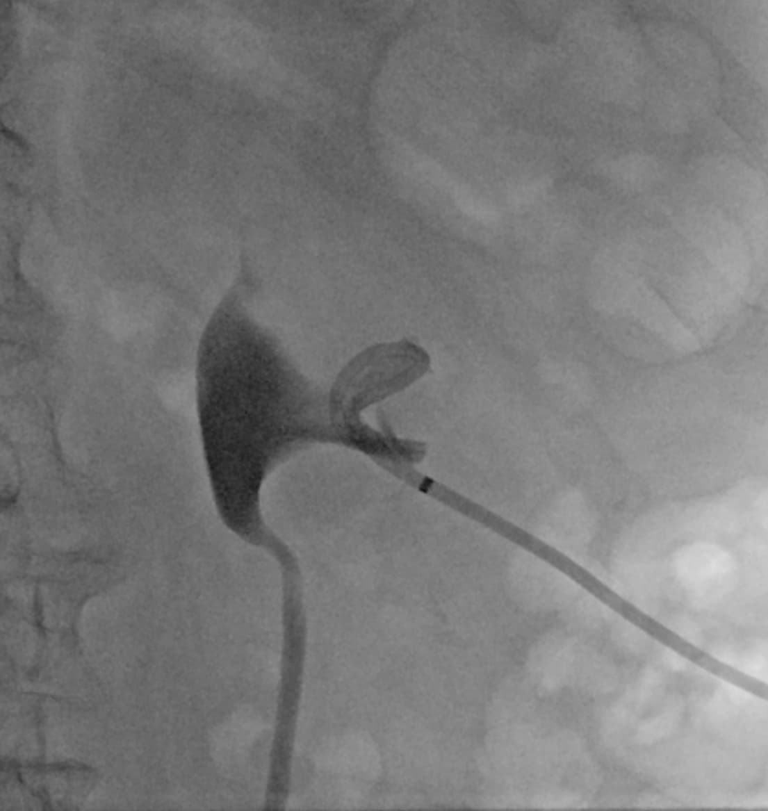
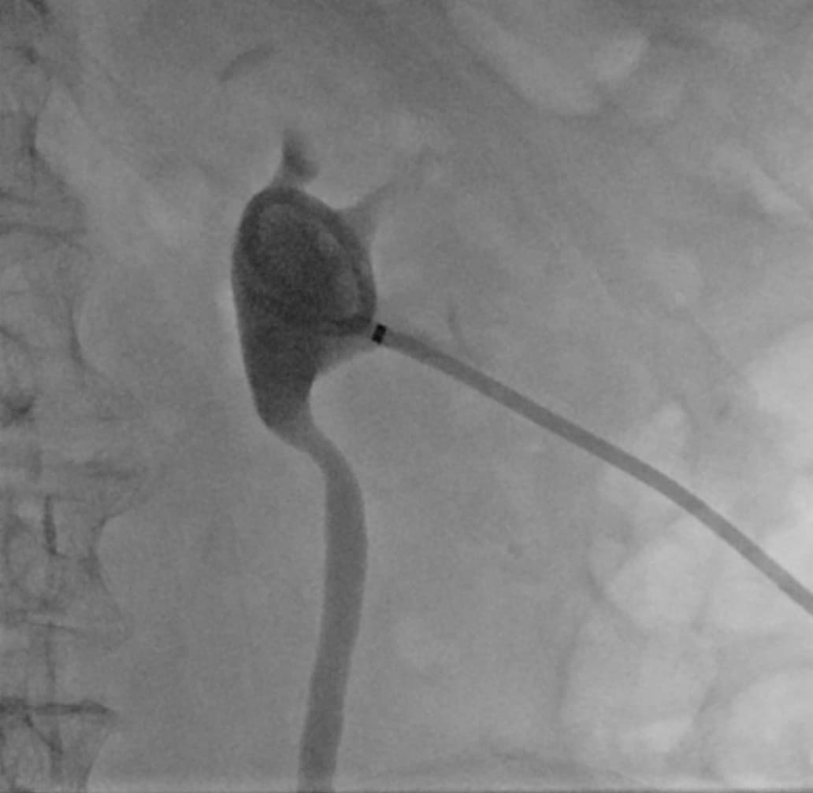

Wissel Nefrodrain
Vervanging van een bestaande percutane nefrodrain over voerdraad
Indicaties & Contra-indicaties
▾
Indicaties
- Reguliere wisseling bestaande nefrodrain (conform schema)
- Disfunctionerende of geobstrueerde drain
- Drain dislocatie waarbij tractus nog intact is
- Wissel naar grotere of andere drainmaat
Contra-indicaties
- INR >1.5 / trombocyten <50
- Actieve infectie zonder adequate AB-dekking
Pre-procedurele Checklist
▾
- Oriëntatie: eerdere beeldvorming ter beoordeling positie huidige drain
- Drainmaat: wissel voor dezelfde maat tenzij anders geïndiceerd
Materiaal
▾
| Materiaal | Specificatie | Aantal |
|---|---|---|
| Steriele tafel | Steriele afdekking instrumenten | 1 |
| Gatdoek | Afdekking patiënt | 1 |
| Bakje contrast | Verdund contrast | 1 |
| Bakje NaCl | Spoelen | 1 |
| 10 cc spuit | Standaard | 2 |
| Echoprobe hoes | Steriel | 1 |
| Amplatz voerdraad | 0.035", kort | 1 |
| Nieuwe drain | Zelfde type/maat als huidige drain, plastic stilet | 1 |
| Drainfix pleister | Standaard | 1 |
| Optioneel (bij eerste wissel of lokale pijn) | ||
| Rode naald (optreknaald) | Standaard | Optioneel |
| 21G naald | Verdovingsnaald | Optioneel |
| Lidocaïne 1% | 10 cc | Optioneel |
| Hechtmateriaal | Transcutane fixatie — alleen bij eerste wissel | Optioneel |
Stappenplan
▾
- 1Patiënt in buikligging of zijligging. Steriele omstandigheden.
- 2Ter oriëntatie: contrastinjectie via de bestaande drain — beoordeel positie in het pyelum.
- 3Bestaande hechting verwijderen. Drain doorsnijden om te ontlocken. Amplatz voerdraad opvoeren via de drain tot centraal in het pyelum.
- 4Bestaande drain verwijderen over de voerdraad.
- 5Nieuwe drain plaatsen over Amplatz voerdraad met plastic stilet. Krul positioneren centraal in het pyelum.
- 6Contrastinjectie via nieuwe drain ter bevestiging van de intraluminale positie centraal in het pyelum.
- 7Drain locken. Fixatie aan huid met drainfix pleister. Bij eerste wissel: eventueel transcutane hechting. Drainzak aansluiten.
Aandachtspunten
Voerdraad positie: Amplatz voldoende diep opvoeren vóór verwijderen oude drain — verlies van tractus vereist nieuwe punctie.
Plastic stilet: Bij wissel plastic stilet gebruiken — minder kans op perforatie van het pyelum bij bestaand tractus.
Tractus niet intact: Als drain langdurig gedisloceerd was of tractus niet meer doorgankelijk is — behandelen als primaire plaatsing.
Complicaties
▾
| Complicatie | Management |
|---|---|
| Verlies voerdraad / tractus | Nieuwe punctie als primaire plaatsing |
| Bloeding (macro-hematurie) | Meestal zelflimiterend; zelden embolisatie nodig |
| Pyelumperforatie | Drain correct herpositioneren; klein risico bij plastic stilet |
| Infectie / koorts | Bloedkweken, IV antibiotica |
Nazorg
▾
- Drain open op zak laten lopen
- Volgende wissel na 6–8 weken — conform AUA-richtlijnen (4–6 weken) en literatuur over optimaal wisselinterval (~60 dagen); eerder bij klachten of obstructie
- Bij koorts of forse toename hematurie: laagdrempelig contact opnemen
Standaardverslag
▾
Ter oriëntatie: [datum/modaliteit]
Steriele omstandigheden. Contrasttoediening via huidige drain toont
[goede positie / positie met krul in pyelum / geringe dislocatie].
Hechting verwijderd. Drain doorgesneden en over Amplatz voerdraad
gewisseld voor een nieuwe [maat] Fr [type] drain.
Contrasttoediening toont goede positie centraal in het pyelum.
Drain gelockt. Gefixeerd met drainfix pleister. Drainzak aangesloten.
CONCLUSIE:
Wissel nefrodrain [links/rechts], [maat] Fr [type].
Afbeeldingen
▾

Stap 2 — Contrastinjectie ter oriëntatie drainpositie

Stap 6 — Contrastcontrole nieuwe drain in pyelum